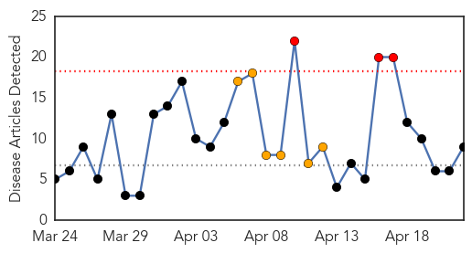
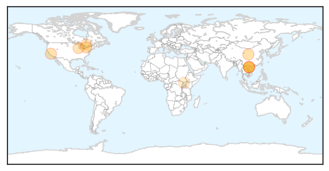

Measles
30-Day Web Trend
3 alerts, 6 warnings

30-Day Twitter Trend
0 alerts, 0 warnings

Article Locations
Article Confidences

Top Articles:
- 0.996
- Vietnamese Government Under Fire Over Its Handling of Measles Crisis
- 0.968
- Vietnam minister inspects measles containment
- 0.957
- Preventative measures against measles must be taken seriously, official says
- 0.941
- Measles cases continue to fall
- 0.938
- Hanoi conference tackles measles crisis
- 0.937
- Guest column: Vaccines still are crucial to health
- 0.880
- Health Department observes National Infant Immunizations Week
- 0.678
- Potential measle exposure prompts warning
- 0.600
- MSF Increases Capacity to Aid South Sudanese Refugees in Uganda - Uganda
Top Tweets:
-
No tweets found for Apr 22, 2014
Hepatitis
30-Day Web Trend
2 alerts, 0 warnings

30-Day Twitter Trend
0 alerts, 0 warnings

Article Locations

Article Confidences

Top Articles:
-
No articles found for Apr 22, 2014
Top Tweets:
-
No tweets found for Apr 22, 2014